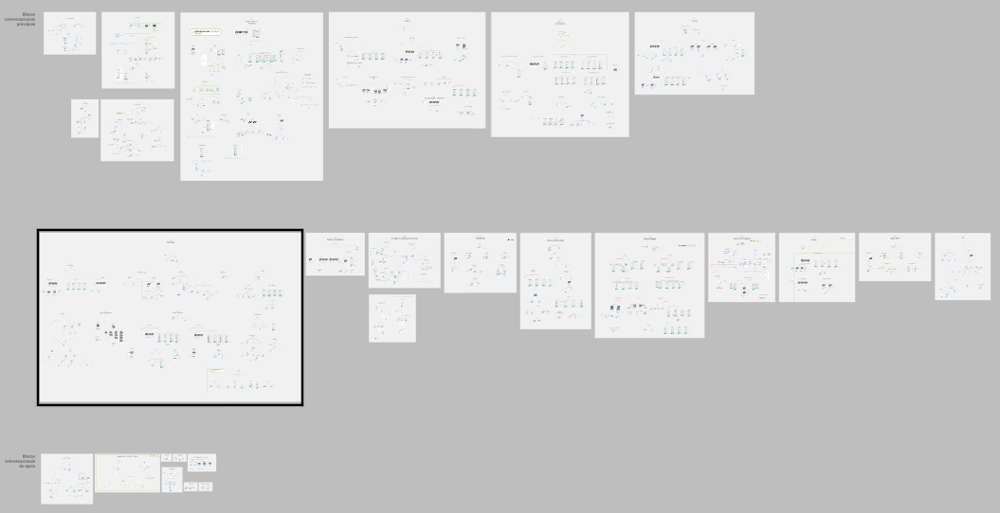
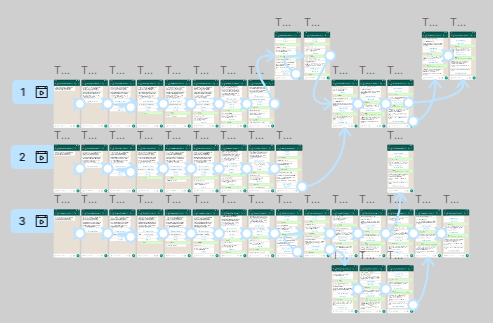
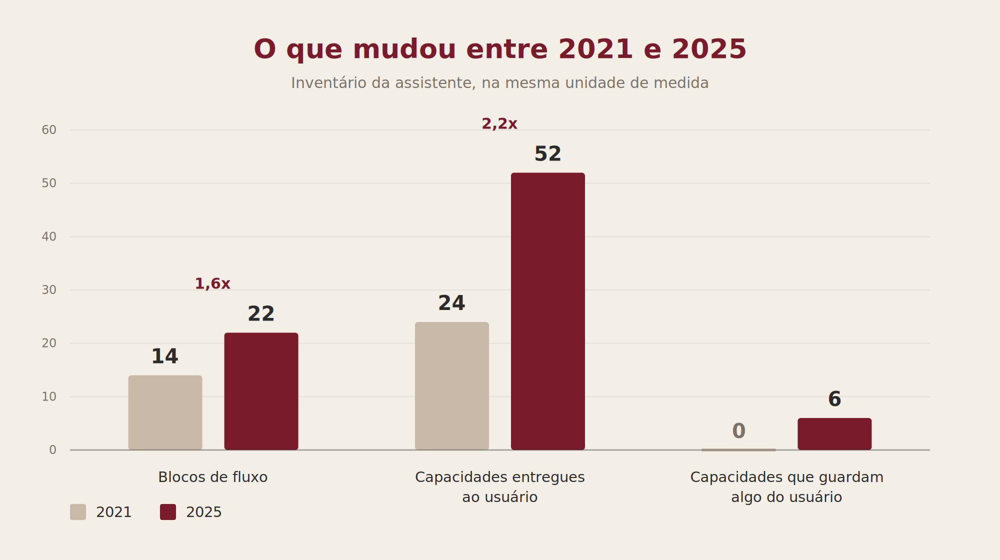
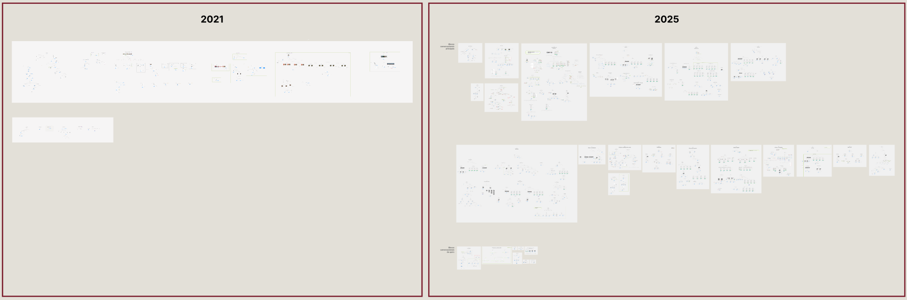

Contexto
Quando entrei, a assistente atendia um shopping e existia só no Messenger, do Facebook. Quando saí, eram 18 shoppings, ela vivia no WhatsApp e tinha deixado de ser só NLP (intenções e entidades) para virar híbrida, com IA generativa.
Toda a infraestrutura que permitiu essa multiplicação foi trabalho de arquitetura. Este case é sobre o outro lado, que é o desenho das conversas.
Redesenhar a estrutura para outro canal
A assistente nasceu no Messenger. Logo que eu entrei, ia passar a existir também no WhatsApp e foi preciso rever todo o fluxo, porque as duas plataformas não usam os mesmos templates. Foi o primeiro redesenho que fiz no projeto, mas longe de ser o único: ao longo do projeto, muita coisa foi revista e readequada.
Cada template do canal novo tem suas próprias regras de formatação e limites de caracteres (o terror!), e isso complicava a adaptação de fluxos tão informativos quanto os nossos.
O caso mais crítico foi o carrossel. O Messenger tinha esse recurso e o WhatsApp, na época, não tinha: o template de carrossel só chegou depois. Era um carrossel horizontal com imagens, que mostrava várias opções lado a lado, e estava em vários pontos da assistente. Tinha que virar outra coisa.
Junto com os stakeholders, decidimos que tudo que usava carrossel no Messenger passaria a usar lista suspensa no WhatsApp. A lista resolvia o problema funcional, era navegável e nativa do canal, mas cobrava um preço: no carrossel as opções apareciam de cara, bem visuais; na lista, a pessoa precisa clicar para abrir, e sem imagem nenhuma. O que era exposição acabou virando consulta.
E aí apareceu um segundo problema, dessa vez com o conteúdo.
Cada item da lista pode ter até 24 caracteres no título, e o nome do filme vinha de uma API externa, ou seja, não tínhamos controle nenhum sobre o tamanho. Um nome maior que o limite quebraria a lista inteira, e não dava para ficar conferindo isso no retorno da API.
A saída foi tirar o nome do título. Cada opção passou a ter um emoji de cinema como título, e o nome do filme foi para o subtítulo, que aceita até 72 caracteres. Essa "regra" acabou valendo para todos os outros fluxos que listavam conteúdo vindo de fora, sempre que a quantidade de caracteres não estava sob nosso controle.
Evoluir o que já existia
Adaptar ao canal novo foi só o começo. Nenhum dos fluxos que herdei chegou a 2025 do jeito que estava. Alguns exemplos do que evoluiu e por quê:
Criar o que não existia
Se alguns fluxos precisaram mudar, outros precisaram nascer. Criei fluxos novos ao longo de todo o projeto, dos mais diretos aos mais complexos.

O maior deles é o que melhor representa esse trabalho: um fluxo em que a pessoa não só consulta, ela se inscreve em atividades, gerencia essa inscrição depois e ainda pode desfazê-la, inteira ou em parte. Duas coisas o tornaram o mais difícil que já desenhei.
{{ h.title }}
{{ h.text }}
Simular a conversa antes de ela existir
Redesenhar, evoluir ou criar do zero: qualquer um dos três terminava do mesmo jeito, com o fluxo documentado antes de virar desenvolvimento. E decisões como a do carrossel eram difíceis de explicar no papel. Falar que "vira uma lista suspensa" não deixa claro o que a pessoa perde, então eu precisava mostrar.
Só que fluxograma comunica lógica para quem é da área, e não para quem aprova.
Eu sempre documentei tudo no Figma, mas, nos casos mais complexos, comecei a criar também protótipos navegáveis de alta fidelidade, simulando a conversa exatamente como ela apareceria no canal.
Em vez de descobrir na homologação que uma parte do fluxo não fazia sentido ou não funcionaria na prática, a gente descobria ainda na aprovação, quando dava para refinar sem gerar retrabalho no desenvolvimento.

Desenhar para o que foge do controle
Boa parte do que a assistente diz não está escrito no fluxo: ela consome esse conteúdo de outro lugar. O conteúdo vem de um painel alimentado pelas equipes operacionais, e cada uma é responsável pelo que preenche. Ou seja, eu desenhava a conversa sem saber exatamente o que ela ia dizer.
Quando você não controla o conteúdo, precisa desenhar para todas as formas que ele pode assumir. E isso se soma ao que pode dar errado do outro lado da conversa:
E a resposta nunca era só avisar que deu errado. Quando a pessoa digitava um dado no formato errado, por exemplo, a mensagem explicava o que tinha acontecido sem colocar a culpa nela, dizia qual era o formato esperado e devolvia a chance de tentar de novo.
Estrutura dá para resolver no desenho. O texto que vem pronto de fora, não.
Logo no início eu tinha escrito o manual de tom e voz da assistente, partindo de uma dinâmica de personalidade que a empresa já tinha feito, e o marketing aprovou o resultado. Com ele em mãos, propus um processo de aprovação para o único conteúdo que dava para controlar, que eram as respostas das perguntas frequentes:
Não resolvia tudo, mas ajudava a manter alguma consistência no que a assistente respondia. Meu papel ali era ler cada resposta como quem estava do outro lado, para ver se aquilo resolvia a dúvida de verdade ou se pulava alguma etapa que só é óbvia para quem trabalha ali dentro.
Ler o que a assistente não entendeu
Como eu sabia o que estava dando errado? Em parte, lendo.
O roadmap vinha do time de produto e dos stakeholders, mas parte do que eu levava para essas discussões saía de outro lugar.
Eu lia o feedback das pessoas: o que elas escreviam e a assistente não sabia responder, seja porque não entendia, seja porque não tinha o conteúdo.
Para mim, isso faz parte do trabalho de quem desenha conversa. Sem olhar o que acontece de fato, você acaba discutindo preferência em vez de evidência.
Nada disso virava mudança automaticamente. Por exemplo, uma pergunta que aparece muito nem sempre precisa virar FAQ, então cada padrão era analisado para decidir se fazia sentido uma FAQ nova, uma frase de treino ou um ajuste no fluxo.
Foi assim que a base de FAQs, que começou copiada dos sites dos shoppings, foi crescendo com o que as pessoas de fato perguntavam.
O antes e depois

A diferença entre as duas primeiras barras é o resumo do trabalho: a assistente cresceu bem mais em profundidade do que em número de funcionalidades.
A terceira barra mostra uma mudança que não é de tamanho: em 2021 a assistente respondia e a conversa acabava ali. Em 2025, seis funcionalidades guardavam algo que era do usuário e devolviam quando ele solicitava, como os cupons que ele já tinha pegado ou as inscrições que já tinha feito.

Por confidencialidade, não divulgo detalhes do fluxo nem métricas de uso e desempenho.
Meu papel
O que eu faria diferente
Teria buscado formas de me envolver mais com dados desde o começo.
Durante boa parte do tempo em que estive no projeto, existia uma equipe de curadoria cuidando das métricas, e eu ficava concentrada na escrita e no desenho. Fazia sentido na divisão de trabalho da época.
Mas, escrevendo este case, percebi o quanto senti falta disso: eu consigo explicar cada decisão que tomei e por quê, mas não consigo dizer o que cada uma delas mudou depois que foi para o ar.
Hoje eu faria diferente. Não necessariamente medindo eu mesma, mas combinando antes o que precisaria ser observado em cada mudança, buscando esse dado depois e registrando ao lado do fluxo. Fluxo documentado sem o dado conta só parte da história.